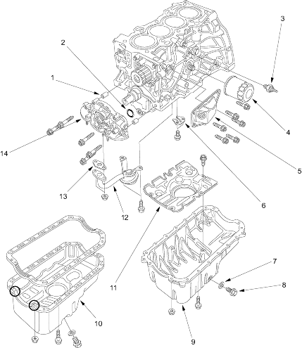

 |
- DOWEL PIN
- O-RING
- OIL PRESSURE SWITCH
Circuit Diagram, page 22-88, in the '01 Civic Shop Manual on this CD
Switch Test, page 8-4, in the '01 Civic Shop Manual on this CD
Oil Pressure Test, page 8-4, in the '01 Civic Shop Manual on this CD
Replacement, page 8-12, in the '01 Civic Shop Manual on this CD
- OIL FILTER
Replacement, page 8-6, in the '01 Civic Shop Manual on this CD
- OIL/AIR SEPARATOR
Installation, page 8-12, in the '01 Civic Shop Manual on this CD
- BREATHING PORT COVER
- WASHER
- DRAIN BOLT
Engine Oil Replacement, page 8-3
- OIL PAN
Installation, for Aluminium Type page 7-24, in the '01 Civic Shop Manual on this CD
- OIL PAN
Installation, for Steel Type, page 7-25, in the '01 Civic Shop Manual on this CD
- BAFFLE PLATE
- OIL SCREEN
- GASKET
- OIL PUMP
Overhaul, page 8-9, in the '01 Civic Shop Manual on this CD
|